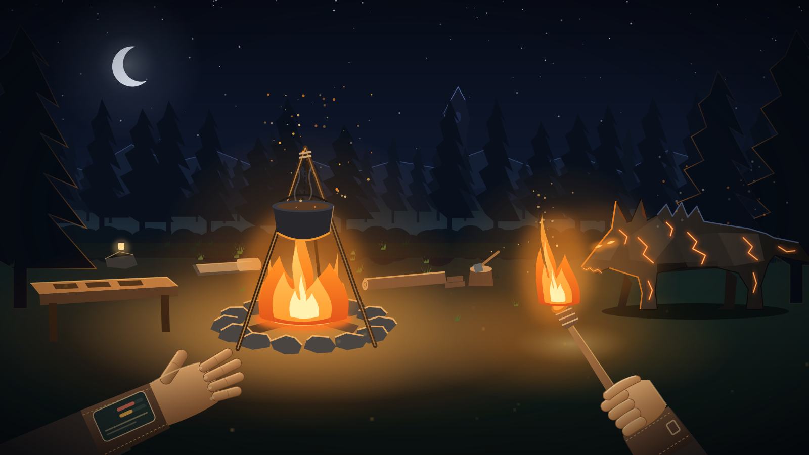
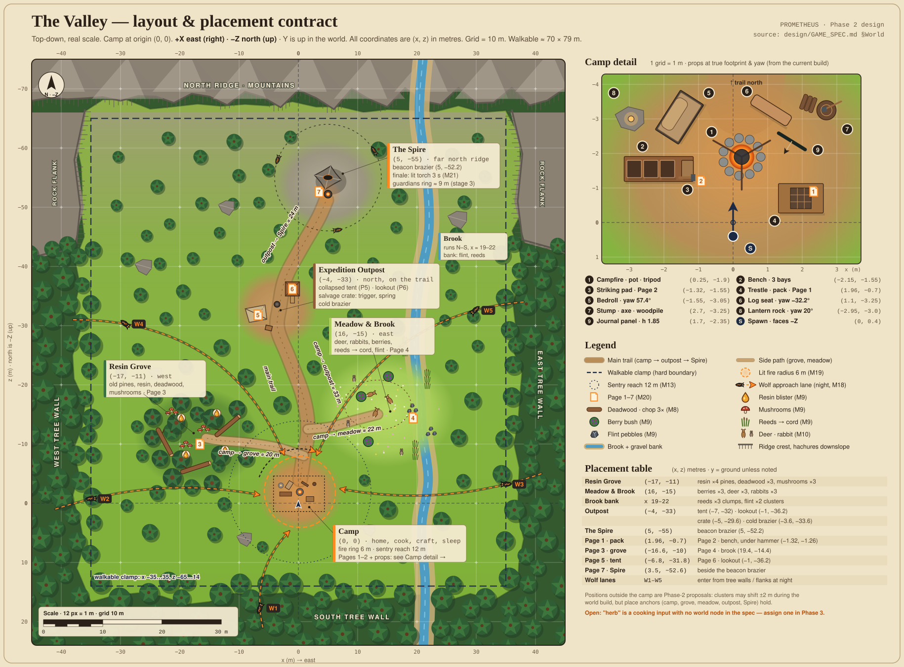

You wake beside a cold campfire with no memory, a lighter, an axe and a tool bench. Gather, cook and craft with your hands, and every fire you make also draws the Hollow.
Every fire in the valley went out on the night the Prometheus Expedition tried to take the ancient flame of the Spire. The notes your team left tell you what happened.
You gather, cook and craft with your hands: flick, stir, strike, chop, throw, pull. Each new tool takes you further from camp, to new places and more pages.
Every fire you make also draws the Hollow: ash-wolves that fear the flame and are drawn to it anyway. The arc ends when you carry fire back to the Spire's beacon.
ImmersiveVR. The browser serves as the launcher and a non-XR preview.
Two controllers. Squeeze grabs, trigger uses tools. No hand tracking.
A 20–30 minute arc, then free play as a sandbox.
Autosaves on sleep, on objectives and every 60 s. "New journey" resets.
You wake at the spawn point facing the cold fire. Pick up the lighter, pull the trigger to flick it, and hold the flame to the tinder for one second. The camp lights up, and objective 1 is complete.
Every result comes from a physical action: flick, stir, strike, chop, throw, pull.
What it rules out: crafting menus. The bench, the pot and the pack are the UI, and a recipe is three items in three bays plus three hammer strikes.
Fire cooks, lights, warms and protects, and it also raises the danger. Every progression step spends that trade-off.
What it means in play: the torch, the crossbow and the sentry each raise the night's danger stage. A player who never crafts a torch stays at stage 0, peaceful forever.
Days are calm and tactile. Nights are tense but easy to read. The story arrives in found pages, never in cutscenes.
What it means in play: the plot is told in 7 pages you hold up and read. Wolves appear only at night, telegraph before they bite and dissolve at dawn.
Anything you learn comes back to camp. Pages teach recipes, recipes make tools, and tools open new ground. Each step also brings the fire's price: a more dangerous night.

The trail links camp, outpost and Spire. Side paths lead to the grove and the meadow. Ridges, tree walls and mountains close the valley in at x −35…35, z −65…14.
Spawn is (0, 0.4), facing −Z (north). Wolves circle outside the 6 m fire ring. The sentry covers 12 m.
This map is the placement contract for the world build. Camp props match the current build exactly. Resource clusters are proposals (±2 m).
You crafted the torch, and the fire noticed. The wolf circles just outside the firelight, crouches and growls. You raise the flame, and it will not come closer.
| Input | Does | Used by |
|---|---|---|
| Squeeze near an item | Grab. Release to drop; a fast release throws. | M1 M10 |
| Trigger with a tool | Flick the lighter, fire the crossbow | M3 M12 |
| Reach over shoulder + squeeze | Take the pack. Release it low to unroll, at the shoulder to wear it. | M2 |
| Release into a target | Pot, bench bay, fire ring or pack cell | M4 M5 M7 |
| Motion | Stir, strike, chop, thrust, hold in flame | M5–M8 M11 |
| Bring to mouth | Eat food, drink the stew | M5 M6 |
| Point + trigger at the bedroll | Sleep (night, fire lit) | M17 |
| Left stick / right stick | Smooth locomotion / snap turn | comfort assist kept |
| # | Mechanic | Player verb | Response and rules |
|---|---|---|---|
| M1 | Grab / carry / throw | Squeeze, release | A released item falls and rests. Released fast, it flies ballistically. |
| M2 | Backpack | Over the shoulder; release low to unroll; grab the roll to roll up | 3×3 grid, one item per cell. The worn pack follows you. |
| M3 | Light fire | Trigger to flick the lighter, hold the flame to the tinder for 1 s | The opening beat. A lit torch also ignites. |
| M4 | Fuel | Release a log or stick into the ring | Fuel 0–100 burns down in ~5 min. At 0 the fire goes out and can be relit. |
| M5 | Cook stew | 2 foods in the pot, 2 stirs, dip the bowl, bring it to your mouth | Worth 1.5 × the ingredients. Named after what went in. |
| M6 | Roast / eat raw | Hold meat in the flame 3 s; bring food to your mouth | Berries +8 · raw meat +5 · roast +35 · stew +45–75 |
| M7 | Craft | 3 items in the bench bays, 3 hammer strikes | Known recipes craft. An unknown valid set also crafts and is learned. An invalid set clanks. |
| M8 | Chop | Swing the axe: 3 hits on deadwood, or a log on the stump | Deadwood → log + 2 sticks. Log on the stump → 2 planks. |
| M9 | Forage | Pull resin, mushrooms, berries, reeds, flint | Reeds → cord. Nodes respawn after ~3 min. assumed |
| M10 | Hunt | Throw or thrust the spear, or shoot the crossbow | A hit drops meat. Deer and rabbits flee when you get close. |
| M11 | Torch | Hold it in the fire to light; hold it toward wolves | Stays lit assumed. Repels wolves within 3 m; a touch makes one flee. |
| # | Mechanic | Player verb | Response and rules |
|---|---|---|---|
| M12 | Crossbow | Trigger to fire; touch a bolt bundle to it to reload | +4 bolts per bundle. Bolts fly ballistically at 30 m/s. |
| M13 | Sentry | Craft the kit, release it on the ground at camp | Auto-aims at wolves within 12 m and fires every 1.5 s while loaded (12 bolts). |
| M14 | Survival | Eat | Hunger −1 per 7 s. At 0, health drains. Health regenerates near a lit fire when hunger > 50. |
| M15 | Death & respawn | (none) | You respawn at the last bedroll you slept in. What you carried drops as a glowing lost pack you can recover. |
| M16 | Day / night | (none) | Day 5 min, dusk 30 s, night 2.5 min, dawn 30 s. Sky, sun, fog and ambience change with it. |
| M17 | Sleep | Point at the bedroll + trigger (night, fire lit) | Skips to dawn, sets respawn and saves. |
| M18 | Danger stage | (none) | Torch 1, crossbow 2, sentry 3. Wolves come only at night. Stage 0 is peaceful forever. |
| M19 | Wolves | (none) | Circle outside the 6 m fire and 3 m torch radii. Telegraph, then bite (−20). 2 health each. Dissolve at dawn. |
| M20 | Pages & recipes | Pick up a page and hold it to read | 7 pages carry the story and the recipes. The journal tracks pages, recipes and objectives. |
| M21 | Finale | Hold a lit torch in the Spire brazier for 3 s | The beacon lights, valley fires relight and wolves dissolve. Ending text, then free play. |
| M22 | Save / continue | Automatic | On sleep, on objective completion and every 60 s. "New journey" lives in the journal. |
| Product | Inputs (any order) | Learned from |
|---|---|---|
| Torch | stickclothresin | Page 1 · camp pack |
| Spear | stickflintcord | Page 2 · camp bench |
| Bolt bundle ×4 | stickstickflint | Page 4 · brook |
| Crossbow | plankcordtrigger | Page 5 · outpost tent |
| Sentry kit | crossbowspringplank | Page 6 · outpost lookout |
Put in any 2 of meat, mushroom, berries or herb, then stir twice over a lit fire. The stew is named after what went in, e.g. "Meat & mushroom stew".
Value = 1.5 × the ingredients, giving +45 to +75 hunger.
Chopping deadwood gives a stick or log. A log on the stump gives planks. Resin and mushrooms come from the grove; berries, reeds (cord) and flint from the meadow and brook. The outpost crate holds the trigger and spring, the camp pack the cloth, and hunting gives meat.
Gap: the spec gives herb no world source. To decide in Phase 3.
Experimenting pays off: an unknown but valid combination still crafts and is learned. An invalid set clanks and doesn't progress, so there are no dead ends.
You wrote this in case the Kindling took your memory as it took the others'. It explains the lighter, the axe and the bench.
The Spire holds the valley's first fire. Prometheus was the plan to carry some of it home in a lantern. The grove and meadow have supplies.
The old pines weep resin. "The cold ones came the night after we lit our first flame."
"The deer don't fear us. The hollow ones fear the flame, but they come to it anyway."
"We drew the Spire's flame into the lantern. For a heartbeat the whole valley shone. Then every fire went out at once."
"It watches while we sleep."
"It was never ours to take. Give it back. Carry fire to the beacon and the valley will remember warmth."
The Hollow dissolve, braziers across the valley relight and dawn breaks. Play continues as a sandbox.
Sleeping at night with the fire lit skips to dawn, sets your respawn and saves (M17). The sky, sun, fog and ambience all change with the time of day (M16).
Peaceful, forever if you choose. The fire still cooks and warms.
1 prowler at night.
3 hunters at night.
5 wolves plus the Spire guardians.
Stay outside the 6 m fire radius and the 3 m torch radius.
Growl and crouch for 0.8 s, then bite for −20 health.
2 health. A bolt does 2, a thrown spear 2, a thrust 1. A torch touch makes them flee.
Wolves dissolve. Dying drops a glowing lost pack; you respawn at the bedroll.
Field journal: a world-space panel at camp (1.7, 1.85, −2.35). It shows the objective checklist, known recipes, pages found (n/7), hunger and health, New journey and Enter/Leave VR.
Hunger and health bars, the sun or moon, the current objective and your bolt count.
A panel beside the page you're holding shows its text.
Short notices ~1.4 m ahead that fade after 3 s and never lock to your head.
A subtle red (hurt) or dark (starving) edge.
All sounds are synthesized offline by a project script: license-clean, with no downloads. assumed
lighter flick · ignite whoosh · plop · stir · bowl fill · eat
hammer clank · craft complete · invalid clunk · chop · wood split
grab tick · drop thud · slot snap · pack unroll / roll
page rustle · recipe learned
spear whoosh · hit · crossbow twang · bolt thunk · reload click · sentry fire · deer flee
wolf howl · growl (the telegraph) · bite · dissolve
player hurt · heartbeat (low health) · sleep swell · death sting
dawn motif · ending theme
Hero views stay at ≤ 200 draw calls and ≤ 250k triangles (S17). Project convention: 11–14 ms per frame at 72–90 fps.
| S1 | Flicking the lighter at the tinder lights the fire; fuel then decreases | Campfire.lit / fuel |
| S2 | 2 ingredients + stirring → pot ready; the bowl fills; eating raises hunger | GameState.hunger |
| S3 | Known recipe + 3 strikes → product; unknown valid → learned; invalid → no progress | product + recipes |
| S4 | 3 chops on deadwood → log + 2 sticks; forage nodes yield items | Item kinds |
| S5 | Pack unrolls low; item snaps to a cell; roll up hides it; worn pack follows | Backpack.state |
| S6 | Fuel falls over time; a log raises it; the fire goes out at 0 | Campfire.fuel series |
| S7 | Starving drains health; death respawns at the bedroll with a lost pack | GameState + LostPack |
| S8 | Time advances; night changes the sky; sleep → dawn, respawn set, save written | time, localStorage |
| S9 | After the torch, the next night spawns ≥ 1 wolf; wolves stay outside the fire radius; bites hurt; bolt and spear kill | creatures + distances |
| S10 | A thrown spear hitting a deer drops meat | ecs find meat |
| S11 | Crossbow fires when loaded; bolt count decrements; a bundle reloads | Item.charges |
| S12 | The deployed sentry fires at a wolf in range | Sentry.bolts + wolf health |
| S13 | Picking up a page shows its text, counts it and unlocks its recipe | pages / recipes, screenshot |
| S14 | A lit torch in the Spire brazier for 3 s → beacon lit, ending, wolves gone | GameState.ended |
| S15 | Reloading the page restores progress | reload + ecs query |
| S16 | Key interactions play their SFX; ambience switches day/night | audio event log |
| S17 | Hero views ≤ 200 draw calls and ≤ 250k triangles | render stats |
| S18 | Typecheck, unit tests and production build pass | CLI |
| Incident | The Prometheus Expedition and the Kindling |
| Danger trigger | Fire/technology milestones, so you can stay peaceful |
| Crossbow | Handheld first, then the auto sentry |
| Scope | A 20–30 min arc in one valley, with autosave |
| Physics | Custom ballistic items on analytic terrain, no engine |
| Recipe discovery | Pages teach recipes, and valid experiments also succeed |
| Repeated deaths | Lost packs accumulate and never despawn |
| Torch burn time | Unlimited, so the finale carry is stress-free |
| Sleep | Night only, needs a lit fire, sets respawn |
| HUD language | Wrist band, physical journal and world toasts |
| Audio source | Offline procedural synthesis → mp3 |
| Creature style | Chunky mid-poly; ember-cracked charcoal wolves |
Open gaps: herb has no world source, and resource-cluster and wolf-lane positions on the map are proposals.